One of the most sacred Hindu temples of Nepal – Pashupatinath Temple is located on both banks of Bagmati
River on the eastern outskirts of Kathmandu.
Pashupatinath is the most important temple dedicated to god Shiva. Every year this temple attracts
hundreds of elderly followers of Hinduism.
They arrive here to find shelter for the last several weeks of their lives, to meet death, be cremated
on the banks of the river and travel their last journey with the waters of the sacred river Bagmati,
which later meets the holy river Ganges. Hinduists from every corner of Nepal and India are arriving
here to die.
It is believed that those who die in Pashupatinath Temple are reborn as a human, regardless of any
misconduct that could worsen their karma. The exact day of their death is predicted by astrologers of
the temple. If you are attracted to the places where the spirit of death can be felt, then consider
Pashupatinath as your first destination. It is a temple with special atmosphere of death; death is
present in almost every ritual and every corner of it.
Pashupatinath complex
The main temple of Pashupatinath is a building with a bunk roof and a golden spire.
It is located on the Western bank of Bagmati and is considered a masterpiece of Hindu architecture.
It is a cubic construction with four main doors, all covered with silver sheets.
The two-storied roof is made from copper and is covered with gold. This richly decorated temple with
wooden sculptures is believed to make wishes come true. One of the most astonishing decorations of the
temple is the huge golden statue of Nandi – Shiva’s bull.
Only followers of Hinduism can enter the main temple, but all the other buildings are available for
foreigners to visit. From the Eastern bank of the river the main temple can be seen in its whole beauty.
The western bank of Bagmati also hosts the so called Panch Deval (Five temples) complex, which once was
a holy shrine but now serves a shelter for destitute old people.
Numerous religious buildings are also located on the eastern bank of Bagmati, most of them are devoted
to Shiva. The majority of these buildings are small single storey constructions made from stone. From
the outside these buildings are reminding crypts, but in reality these are sacral buildings, created for
holding the symbol of the deity Shiva – lingam (erect phallus). Lingams can be found all over the
complex.
Along the right bank of Bagmati numerous platforms for funeral pyres are built. The cremations on these
platforms are a common activity.
Usually tourists have the chance to see at least one open-air cremation.
The majority of religious rituals are culturally unusual and even mind-blowing for Westerners, but
probably the most culturally unusual thing in Pashupatinath is the specific smell of cremated bodies.
Unlike any expectation the smell has nothing in common with the smell of decaying flesh, but rather
reminds the smell of clabber mixed with different spices.
Another culturally shocking thing in Pashupatinath is the image of local women washing clothes
downstream the river. The waters of Bagmati contain animal fat because of the ashes of cremated Shiva
followers and easily wash the dirt from linen. It is believed that this is how the soap was invented.
As far as Shiva is considered the patron of animals and all living organisms, monkeys and deers are
wandering all around the temple complex on both banks of Bagmati. Monkeys are very often unfriendly,
they beg for food, snatch things from careless tourists and may even be dangerous.
It is also very common to meet sadhus in Pahsupathinath.
Sadhus are wandering ascetic yogis, who are trying to acquire liberation from the cycle of death and
rebirth by meditating.
They have very unique appearance with specific yellow paintings on their bodies.
Majority of sadhus are very tourist friendly and eager to pose for the photos with foreigners, but it is
not free of charge. They live in caves or tiny cells on the territory of Pashupatinath. Sadhus have
extremely ascetic and even miserable life but for a Westerner their independent and unconstrained
behavior looks mysterious.
 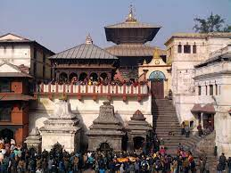
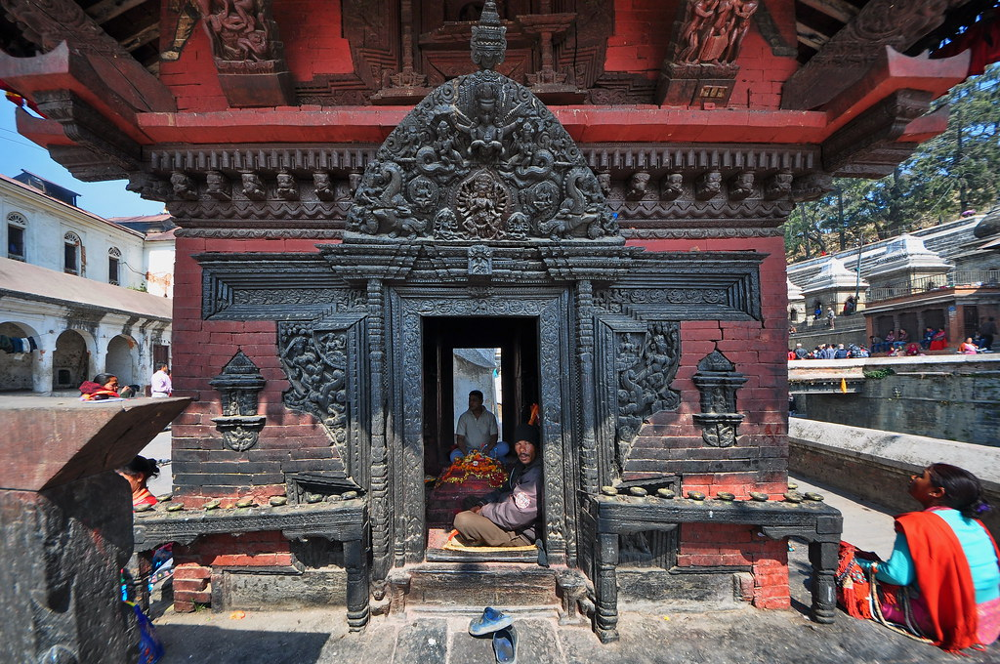
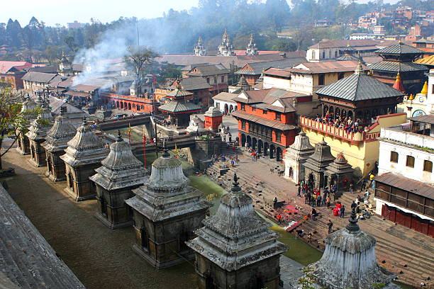
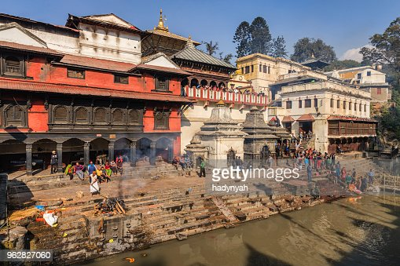
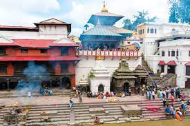
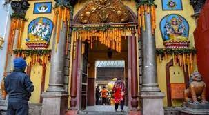
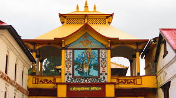
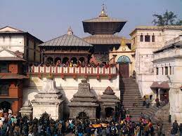
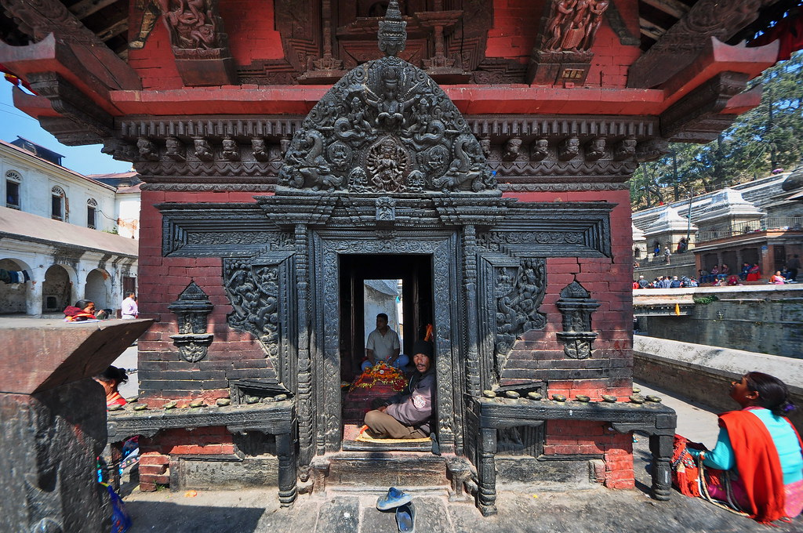
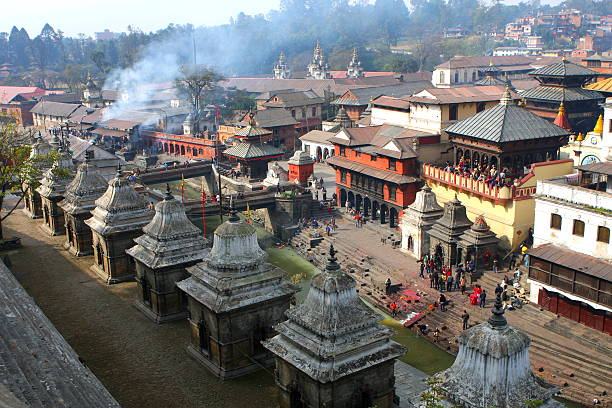
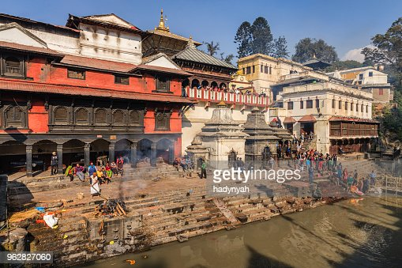
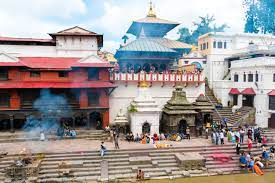
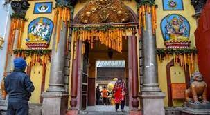
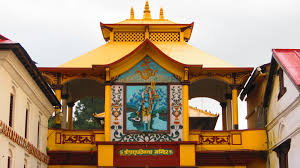